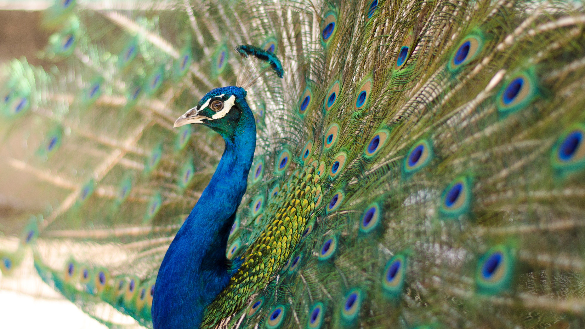
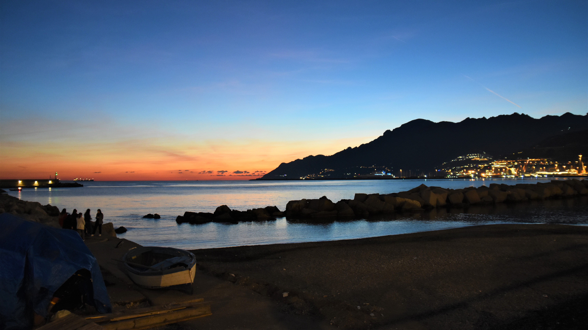

MURO
 UZBEKISTAN
UZBEKISTAN
UZBEKISTANHo scattato questa foto durante il mio viaggio in Uzbekistan. Con questa immagine volevo sottolineare le splendide imperfezioni delle strutture di quel luogo. L'Uzbekistan è un Paese dell'Asia Centrale, ex repubblica sovietica. È noto per le moschee, i mausolei e i luoghi legati alla Via della Seta, l'antica rotta commerciale che collegava la Cina al Mar Mediterraneo. Samarcanda, la città più importante lungo la Via, ospita un importante esempio di architettura islamica: il Registan, una piazza delimitata da tre scuole religiose decorate con ricchi mosaici e risalenti ai secoli XV-XVII.
scattato con: NIKON

PAVONE
UZBEKISTAN
UZBEKISTANHo scattato questa foto durante il mio viaggio in Uzbekistan. In questa foto possiamo ammirare la maostosità del pavone reale. Originario delle foreste dell'India, era già noto all'antica Grecia. I Romani lo allevavano sia per la sua bellezza che per la prelibatezza di carni e uova. La livrea di questi uccelli è uno dei casi più rappresentativi di dimorfismo sessuale: la testa e il collo del maschio sono ricoperte di piume blu elettrico dai riflessi metallici. La zona intorno all'occhio è nuda, con pelle bianca interrotta da una striscia nera.
scattato con: NIKON
TRAMONTO
SALERNO
SALERNOQuesto foto rappresenta uno scorcio della costa salernitana, immortalata nella golden hour. Il lungomare Trieste di Salerno è un grande giardino alberato (interamente pedonale, largo 30 metri e lungo circa 1 km e mezzo) che costeggia il mar Tirreno diviso su più corsie, va dal centro storico al porto turistico di piazza della Concordia. Il lungomare cittadino accoglie molte persone, in estate e in inverno: è il luogo privilegiato dei giovani che vi si incontrano ad ogni ora del giorno e della notte, per gli atleti che preferiscono l'attività fisica all'aria aperta e le famiglie che possono godere di una passeggiata al mare. Il lungomare si anima durante le vacanze di primavera con attività di animazione per i più piccoli, con il teatro dei burattini tradizionali, mercatini e fiere.
scattato con: NIKON
PIETRE
LETOJANNI
LETOJANNIIn questa fotografia possiamo ammirare la poderosità del mare che si infrange sulla costa, con la sua forza e la sua grazia continua. Onda marina è un termine con il quale si vuole definire un caso particolare di onda fisica in cui è messa in moto la superficie d'acqua di un ampio bacino come il mare (da cui il nome). Si tratta di un caso particolare di onde di gravità, ossia di onde che si propagano all'interfaccia di due fluidi con densità diversa (in questo caso acqua e aria).
scattato con: NIKON

CASE
ROMANIA
ROMANIAIn questa fotografia ho immortalato un scorcio molto colorato e caratteristico di una strada di un piccola cittadina rumena. La Romania è un Paese dell'Europa sudorientale conosciuto per i boschi della Transilvania, una regione circondata dai monti Carpazi. La Romania comprende cittadine medievali ben conservate come Sighişoara e numerose chiese e castelli, tra cui quello di Bran, costruito sulla roccia e per molto tempo associato alla leggenda di Dracula.
scattato con: NIKON